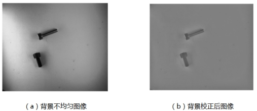
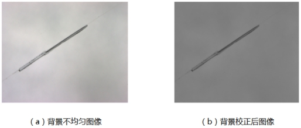
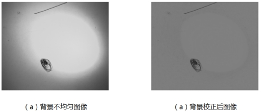
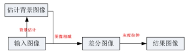
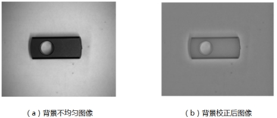
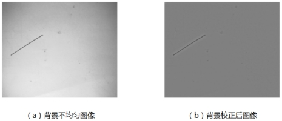
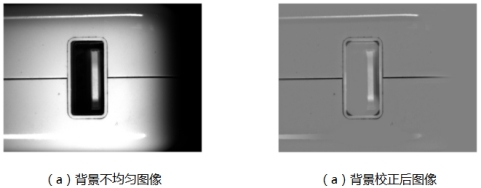
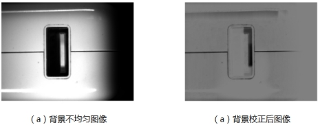

成像过程中，由于光照的强度不均匀、光源位置、角度等因素的影响，会在图像中出现不均匀的背景，影响图像的检测精度和分析结果。背景校正工具就是针对背景不均匀的图像，通过一定算法，消除不均匀光照对图像造成的影响，输出背景均匀的图像。



| 分类 | 参数名称 | 参数描述 |
|---|---|---|
| 属性窗口 | 背景校正方法 | 主要有：高斯滤波、均值滤波、中值滤波、形态学明和形态学暗方法。 |
| X/Y方向高斯滤波参数 | 用于设置高斯滤波X/Y方向模糊强度。 | |
| 滤波器X/Y方向尺寸 | 用于设置均值滤波或者中值滤波的X/Y方向尺寸。 | |
| 形态学结构元素X/Y方向尺寸 | 用于设置形态学结构元素X/Y方向尺寸。 | |
| 图像窗口 | 输入图像 | 用于背景校正的灰度图像。 |
| 数据链 | 输入图像 | 用于背景校正的灰度图像。 |
| 高级界面 | 无 |
| 分类 | 参数名称 | 参数描述 |
|---|---|---|
| 监视窗口 | 输出图像 | 背景校正后的图像。 |
| 执行结果 | 工具执行结果。 | |
| 执行时间 | 工具执行时间。 | |
| 图像窗口 | 输出图像 | 背景校正后的图像。 |
| 执行结果 | 显示工具执行结果，执行成功显示“OK”，执行失败显示“NG”，同监视窗口的执行结果参数。 | |
| 数据链 | 输出图像 | 背景校正后的图像。 |
背景校正工具首先对输入图像使用低通滤波进行背景估计，从而得到估计背景图像，其次输入图像减去背景图像后进行灰度拉伸，使输出图像的灰度值范围为[0，255]，得到最终输出图像，其流程图如图4所示。

工具实现了高斯、均值、中值、形态学明和形态学暗五种方法进行图像背景校正。每种方法的校正效果如下。




建议处理以下特征背景不均匀图像：
不均匀背景具有渐变过渡区域；
目标区域边界明显，且目标简单、较小。
| 校正方法 | 边界保持度 | 大尺寸目标适用能力（像素） | 目标亮度 | 效率 | 典型应用场景 |
|---|---|---|---|---|---|
| 高斯 | 较差 | 好 | 多亮度 | 较差 | 缺省 |
| 均值 | 差 | 差 | 多亮度 | 好 | 小尺度效果好，速度较快 |
| 中值 | 较好 | 较差 | 多亮度 | 差 | 边界保持度较好，支持多亮度 |
| 形态学明（暗） | 较好 | 较好 | 单一亮度 | 较好 | 单亮度下边界保持度较好，相比中值速度更快 |
参见“\Samples\背景校正工具.gvp”。